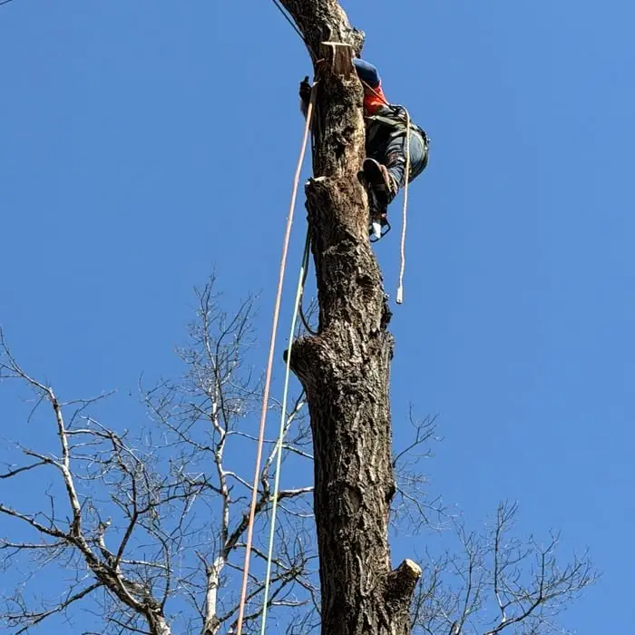
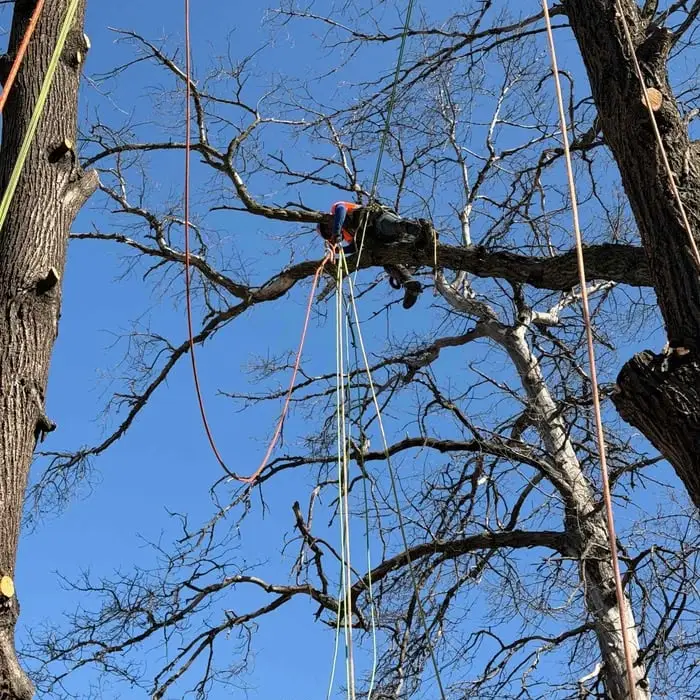

Tree Removal
Dead, leaning or unwanted trees taken down safely, with full cleanup.
Updated · By Blaine Tree Removals
Minnesota winters are tough on people, but they are one of the best times to take a tree down. Here is why, and what to expect when you book a winter removal.
Most homeowners think of tree work as a spring or summer job. In Minnesota, the cold months are often the better choice. From roughly December through March, the conditions in Blaine line up in your favor: the ground is frozen, the trees are dormant and the leaves are off.
Tree removal means heavy equipment and heavy wood. In spring and fall, soft soil turns into ruts and mud under a loader or a log dropped from 40 feet up. When the ground is frozen solid, equipment rolls across it and logs land on a hard surface. Your lawn, landscaping and irrigation lines come through in much better shape.
Oak wilt is a serious tree disease in the Twin Cities area. The beetles that spread it are attracted to fresh wounds on oaks, mainly from April through July. Cutting or removing oaks in winter, while the beetles are inactive, avoids that risk to the oaks left standing in your yard and your neighbors' yards. If you have an oak to remove or prune, winter is the time.
Without leaves, every branch, crack and dead limb is visible. That makes it easier to plan the cuts, judge where the weight is and spot hazards that are hidden in summer. Less leaf mass also means less material to chip and haul.

Spring and summer are the busiest seasons for tree services, especially after storms. Winter usually has more openings, so non-urgent jobs can be booked on a date that works for you.
Perennials, shrubs and garden beds are dormant under the snow. There is far less risk of crushing plants than in the middle of the growing season.
Winter also brings its own hazards. Ice storms and heavy wet snow can bend and snap limbs, and a branch that cracked under the weight may hang in the tree until it thaws. If you see a limb hanging over your roof, driveway or walkway, keep people and cars out from under it and call us. For trees on houses or power lines, see our emergency storm cleanup page.

If you have a tree you have been meaning to take care of, now is a good time to get on the schedule. Call or text (651) 800-1205 or request a free quote online. We serve homeowners across Blaine, MN.
Yes. Winter is one of the best times for tree removal in Minnesota. Frozen ground protects your lawn from equipment and falling wood, and dormant trees are easier to assess and handle.
Oak wilt is spread by beetles attracted to fresh wounds on oaks, mainly from April through July. Cutting oaks in winter, when the beetles are inactive, avoids spreading the disease.
Normally not. Crews work through most winter weather. Extreme cold, high winds or ice storms can delay work, and we reschedule for safety when needed.
Often, yes. If the ground is frozen too hard around a stump, we can return in spring to grind it.
It helps to keep the driveway and gate clear. If there is deep snow, we can clear a path to the tree ourselves.
Call or text for a free, no-obligation quote. We serve homeowners all across Blaine, MN.